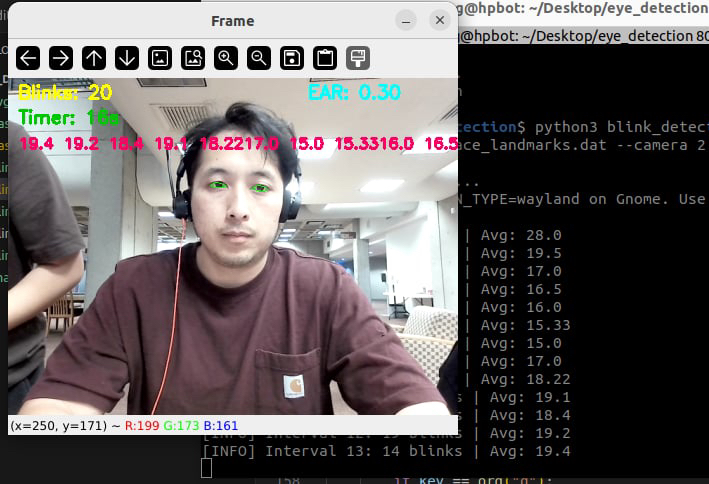

Eye Health Blink Detection
An in-progress computer vision project focused on tracking eye blinks in real time to better understand blink frequency during screen use and explore ways to support eye health awareness.


Project Overview
This project started as a way to explore how computer vision could be used to monitor blink behavior during extended periods of screen use. Reduced blink frequency is commonly associated with eye strain, so the goal was to build a system that could measure this behavior in real time rather than relying on subjective observation.
The current implementation detects facial landmarks, calculates eye openness using the Eye Aspect Ratio (EAR), and tracks blink events continuously. The system also groups blink counts into time intervals and records the data for later analysis.
While the core blink detection approach is based on established methods using OpenCV and dlib, this project focuses on extending that foundation into a practical monitoring tool with time-based tracking, visualization, and future user-facing features.
What Was Built
- Real-time eye blink detection using facial landmark tracking
- Eye Aspect Ratio (EAR) calculation to identify blink events
- Support for both webcam input and prerecorded video input
- Blink counting over 20-second time intervals
- Rolling average calculation to monitor blink trends
- Automatic CSV export with timestamped session data
- Live visualization of blink counts using Matplotlib
How It Works
The system uses dlib’s facial landmark detector to locate key points around both eyes. From these landmarks, the Eye Aspect Ratio (EAR) is calculated for each frame as a measure of how open or closed the eyes are.
When the EAR drops below a defined threshold for a small number of consecutive frames, the system registers a blink event. This helps distinguish actual blinks from noise or small eye movements.
Blink counts are grouped into 20-second intervals, and a rolling average is maintained to track changes over time. The system displays these metrics in real time and saves them to a CSV file for later analysis.
System Pipeline
Webcam / Video Input → OpenCV Frame Processing
→ dlib Facial Landmark Detection
→ Eye Aspect Ratio (EAR) Calculation
→ Blink Detection Logic
→ 20-second Interval Aggregation
→ Rolling Average Calculation
→ CSV Export + Live Plotting
Why This Project Matters
Many computer vision projects focus on detection alone, but this project explores how that detection can be turned into meaningful behavioral data. Blink frequency is a simple signal, but tracking it over time creates an opportunity to better understand patterns related to fatigue, focus, and prolonged screen use.
This project also demonstrates how lightweight computer vision systems can be used for real-world monitoring applications rather than just one-time inference tasks.
Current Status
The blink detection pipeline is working and capable of tracking real-time eye activity, estimating blink counts, and saving results for later analysis. The system also includes basic visualization of blink trends during runtime.
The project is still in progress, particularly in terms of user interface design, long-session analysis, and overall usability.
Next Steps
- Improve webcam-based usability for everyday monitoring
- Design a cleaner and more intuitive user interface
- Add threshold-based alerts when blink rate drops too low
- Generate clearer graphs showing blink frequency over time
- Track blink behavior across different activities such as coding, reading, and gaming
- Analyze how time of day or fatigue impacts blink frequency
- Develop a session summary with averages and trend insights
Potential Future Ideas
- Dashboard-style interface for long-term blink tracking
- Real-time visual or notification-based eye strain alerts
- Multi-session comparison across days
- Integration with a lightweight desktop or web UI
- Overlay live graphs directly within the camera feed
- Exportable reports with charts and summary statistics
What I Learned
- How facial landmark detection can be used for behavioral tracking
- How EAR provides a simple but effective blink detection signal
- How to structure real-time data collection and interval-based analysis
- How to combine computer vision with logging and visualization tools
- How early prototypes can evolve into more complete monitoring systems